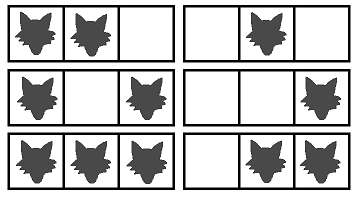

Single Round Match 578 Round 1 - Division II, Level Three
Mr. Pasuterukun is walking along a straight road. He is cautious, because he has heard that there may be some wolves on the road.
The road consists of N sections. The sections are numbered 0 through N-1, in order. Each section of the road contains at most one wolf.
You have M additional pieces of information about the positions of the wolves. Each piece of information is an interval of the road that contains at least one wolf. More precisely, for each i between 0 and M-1, inclusive, you are given two integers left[i] and right[i] such that the sections with numbers in the range from left[i] to right[i], inclusive, contain at least one wolf in total.
You are given two String[]s L and R. The concatenation of all elements of L will be a single space separated list containing the integers left[0] through left[M-1]. R contains all the integers right[i] in the same format.
Return the number of ways in which wolves can be distributed in the sections of the road, modulo 1,000,000,007.
WolfInZooDivTwocountint, String[], String[]intint count(int N, String[] L, String[] R)
["0 1"],
["2 4"]
There is at least one wolf on the sections 0 through 2, and at least one wolf on the sections 1 through 4.
["0 4 2 7"],
["3 9 5 9"]
["0 2 2 7 10 1","3 16 22 30 33 38"," 42 44 49 51 57 60 62"," 65 69 72 74 77 7","8 81 84 88 91 93 96"],
["41 5 13 22 12 13 ","33 41 80 47 40 ","4","8 96 57 66 ","80 60 71 79"," 70 77 ","99"," 83 85 93 88 89 97 97 98"]
You must first concatenate the elements of L and only then split it into integers. The same holds for R.
["1"],
["2"]
The following picture shows all possible patterns.
